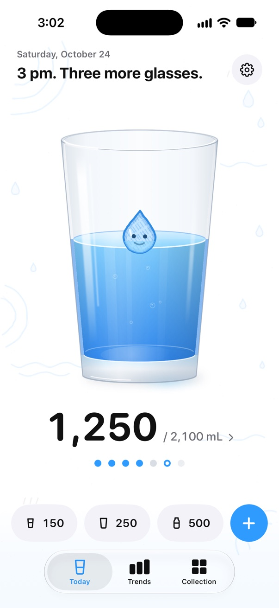
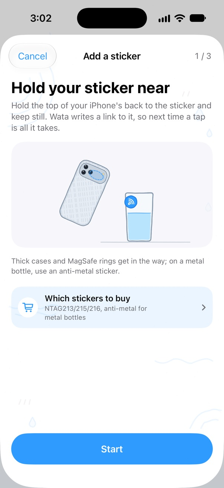
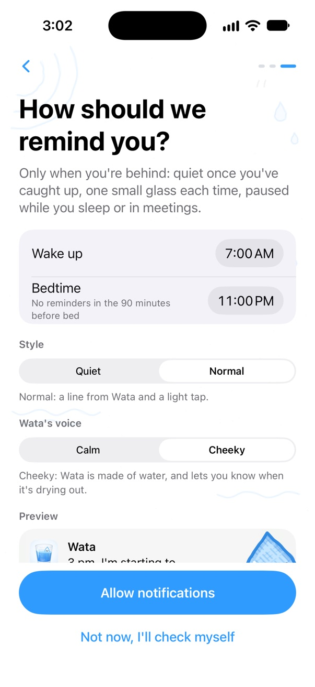
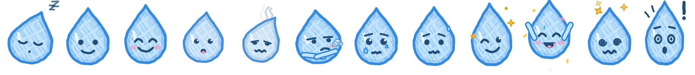
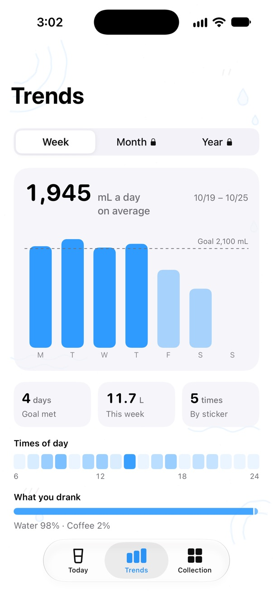
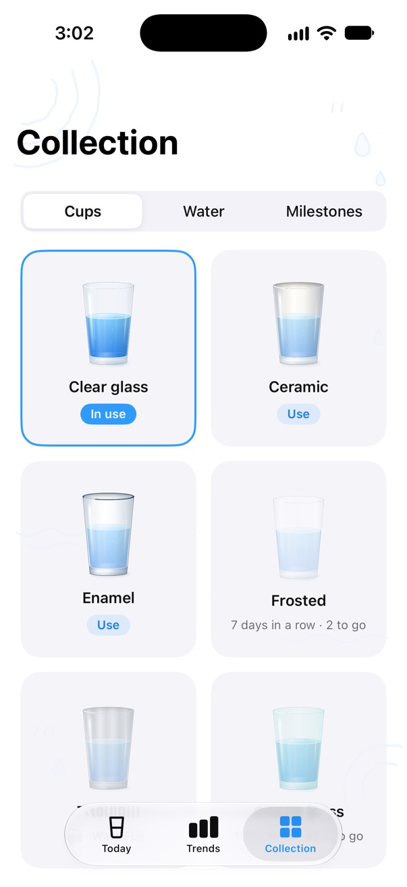
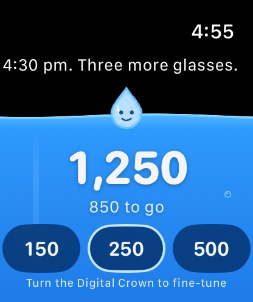
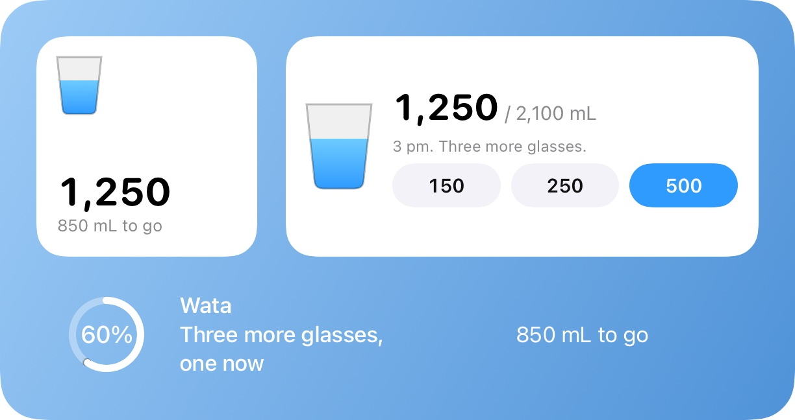
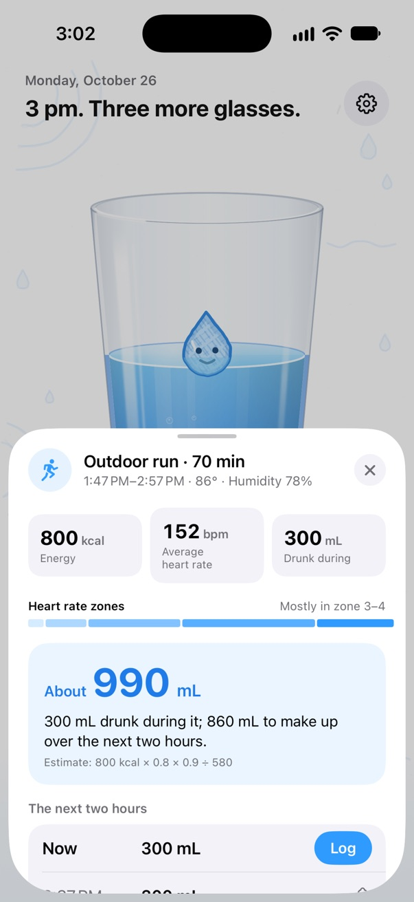

Phone to bottle. Glass logged.
Put an NFC sticker on your bottle. Hold your iPhone to it, tap the banner that appears, and the water is in Apple Health without hunting for the app. Wata reminds you by what is left to drink, not by the clock, and lives in a real glass that sloshes when you shake your phone.
Coming to the App Store
iPhone XS or later with iOS 18 · Apple Watch with watchOS 11

A sticker on every bottle
Any NFC sticker of the right kind, a few for the price of a coffee. Pair it once in Wata, and from then on a tap logs the whole bottle.
- Wata shows where to hold the sticker on your own iPhone model, and asks iPhone Duo to fold first.
- Each sticker is a container: its name, how much it holds, and what is in it.
- Read again within a few minutes, it asks before logging, in case the bottle and the phone share a bag.
- For ten seconds after a tap you can make it half, or undo it.
- A family can share a cup: each iPhone logs its own taps.
- iPhone reads a sticker with the screen on and asks for a tap on its banner; a Shortcuts automation can log one with no tap at all.

Reminders that follow what you drink
Wata plans reminders from what is left for the day, and plans them again after every drink, wherever it was logged.
- Never within 45 minutes of a drink; quiet once you are done, and in the 90 minutes before bed.
- Only when you fall behind the day's pace: about every 75 minutes until you've caught up (lighter or more often if you like), each asking for one small glass.
- Log straight from the notification, or tap Later.
- Focus filters for on-the-hour or no reminders, and an optional pause during meetings.

Wata is made of water
The drop in your glass shows how the day is going: sleepy in the morning, thirsty when you fall behind, sulking after hours without a sip, close to tears on an evening with much left, and jumping through confetti at the goal.

Calm3 pm. 850 mL to go, 280 mL will do.
Cheeky3 pm. I'm starting to shrink. Really.
Cheeky, ignored twiceThese reminders don't seem to be working. I'll just quietly evaporate.
- Two voices: calm, with the time and what is left, or cheeky, a mascot guilting you into a glass.
- The cheeky one only ever asks for a small glass, and stays quiet once you are done, near bedtime, or after too much too fast.
- Each reminder carries Wata's face of the moment.
- Copy written for each language, not translated.
In Health, on your wrist, on your Home Screen
Every drink goes to Apple Health as water, and water other apps log there counts once. The goal is worked out from your weight, your workouts and, if you like, the heat where you are.
- Apple Watch: the whole screen is the glass, the water rises with your day and Wata floats on it; three quick amounts, the Digital Crown to fine-tune, and complications for your watch face.
- Widgets for the Home and Lock Screens, a Control Center button, Siri and Shortcuts.
- Trends by week; by month and year with Wata Full, with the year in review.
- Collection: cups to drink from, textures of water, and a few milestones, earned rather than handed out daily.
- On iPhone Duo: the glass beside the day's plan when open, a pad of big buttons in tabletop.




After a workout, drink back what you sweated out
When a workout reaches Health, Wata estimates the sweat from the energy it burned and the air you did it in, adds it to the day's goal, and spreads what to drink back over the next two hours.
- Drinks of up to 300 mL every 40 minutes, with a sports drink after a long or hot one.
- A reminder before a workout you do every week at the same time.
- With Wata Full: reminders during workouts through a Shortcuts automation, never more than you sweat; a sweat test that makes the estimate yours; the recovery on the Lock Screen.

Free, or once for good
Wata is free to use, with at most one ad a day. One payment removes the ads and opens everything, for your whole family.
Wata
Free
- Logging, reminders, Health and Apple Watch, widgets, Siri
- One sticker
- Trends by week, advice after workouts
- At most one ad a day: none in the first seven days, never while you log a drink
Wata Full
US$2.99 once
- No ads, ever
- As many stickers as you like
- All your history: months, years, the year in review
- Every drink, every cup and every texture of water
- Reminders during workouts and the sweat test
- Family Sharing; no subscription
Every update to Wata 1 is free, and the free version's ads will never come more often. About NT$90 in Taiwan; the App Store shows the price where you are.
Your water stays yours
Your drinks are kept on your devices and in Apple Health, which can keep them in your iCloud; the developer never receives them. Nothing about your health ever reaches the free version's ad network.